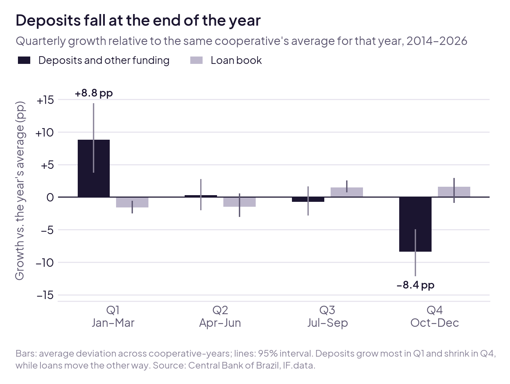
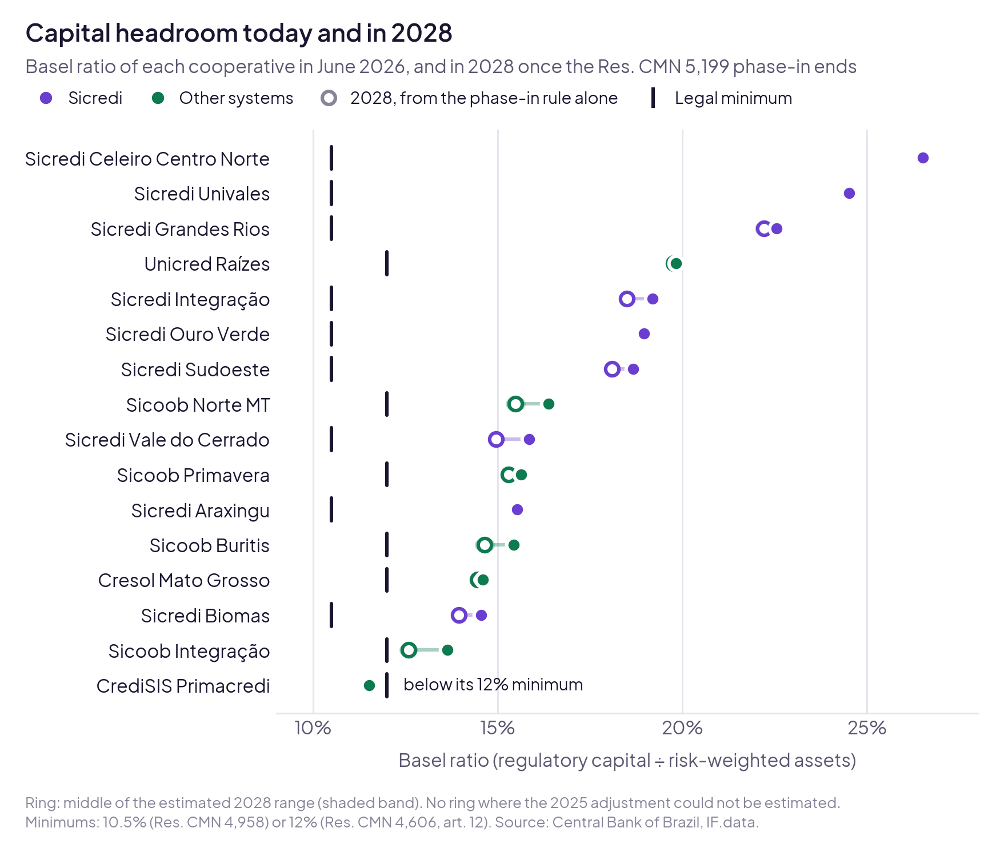
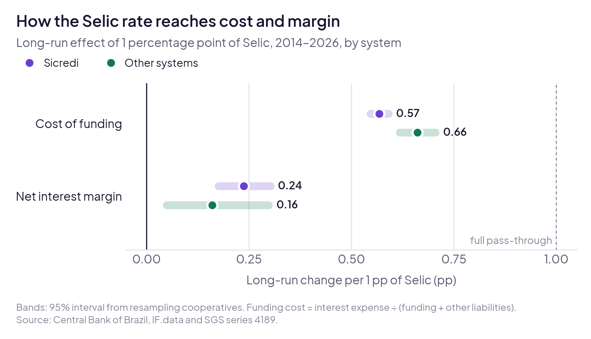
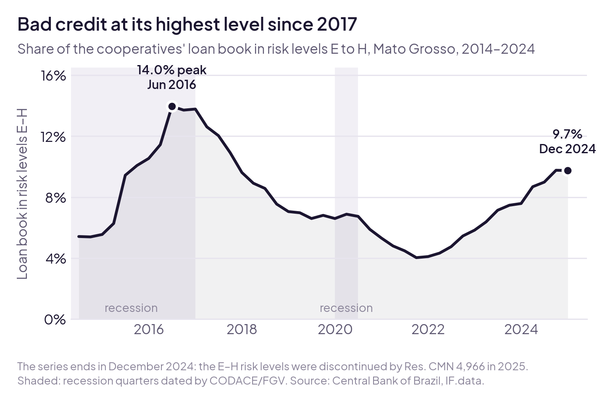

Asset and liability management in the credit cooperatives of Mato Grosso, Brazil: a study with public Central Bank data
Thalles Paul Leandro Mota
Abstract. Credit cooperatives have grown fast in Mato Grosso, the Brazilian state where I live: by 2024 they ran half of its financial service points. Using only public Central Bank data, I looked at how the 19 cooperatives based here handle the three things a treasury worries about most: cash, capital and the cost of money. Deposits shrink at the end of the year, running 8.4 points below the year's average in the fourth quarter. An accounting change made in 2025 will keep eating into capital until 2028, and one cooperative already reports a Basel ratio of 11.5%, below its 12% minimum. When the Selic policy rate rises by one point, the cost of funding ends up 0.57 point higher at Sicredi and 0.66 at the other systems. Bad loans were climbing too, reaching 9.7% of the loan book at the end of 2024, the most since 2017. Before trusting any projection, I tested it on quarters that had already happened.
My role: study design, data collection, analysis and report. Tools: Python · pandas · NumPy · matplotlib · pytest · LaTeX. Code: private; demonstration on request.
1. Why I studied this
I live in Rondonópolis, in Mato Grosso, and here credit cooperatives are everywhere. Between 2019 and 2024 they went from a third to half of all financial service points in the state, and by 2024 they were the only ones with a service point in 31 municipalities. Cooperative credit here also has a calendar: money comes in at the start of the year and leaves at the end, and each system feels the Selic rate in its own way.
I wanted to learn asset and liability management by doing it. The job is to match the money a cooperative takes in with the money it lends, so that there is always cash for withdrawals, capital to absorb losses and enough margin to pay the bills. So I took the public numbers, rebuilt each cooperative's balance sheet quarter by quarter, and asked three questions: when does cash get tight, how much capital is left above the minimum now and in 2028, and how does the Selic rate reach the cost of funding and the margin.
2. How I set it up
Everything comes from the Central Bank's public IF.data: balance sheets, income statements, capital and loan quality for the 19 cooperatives headquartered in Mato Grosso, from 2014 to June 2026. The two central cooperatives stay out of the comparisons, since their numbers repeat those of their members.
Two things made this harder than downloading a table. In 2025 the chart of accounts changed, so I built a bridge between the old and the new accounts and checked that every balance sheet still adds up, in every quarter from September 2023 on. And outside Sicredi, most of a cooperative's spare cash sits with its central cooperative, in an account the usual liquidity ratio does not count. Measured the usual way, those cooperatives look far less liquid than they are, so I measured liquidity both ways.
I also read the regulations at the source to give each cooperative its own capital minimum, 10.5% or 12% depending on its segment and regime, instead of one number for all. For the projections, I tried several methods on 1,492 forecasts of quarters that had already happened. None beat the simplest one, assuming the next quarters look like the last, so that is the one I used, with an error band taken from those tests. Every downloaded file is fingerprinted, and automated tests stop the analysis if a balance sheet does not add up or a minimum is applied wrongly.
3. What I found
Money leaves at the end of the year. Compared with each cooperative's own average for the year, deposits run 8.8 points above it in the first quarter and 8.4 points below it in the fourth, and the fourth quarter is the weakest of the year in more than half of the cases. Loans move the other way. To size a bad quarter, I took the worst outflow seen in one quarter out of a hundred: 27.7% of deposits. Outside Sicredi, none of the 7 cooperatives could cover it with the cash on its own balance sheet. Counting the money held at the central cooperative, between 23% and 100% of deposits would still be covered after it.

Capital is shrinking in slow motion. When the new accounting rule (Res. CMN 4,966) took effect in 2025, loan-loss provisions jumped in 16 of the 17 cooperatives. A second rule (Res. CMN 5,199) lets that hit reach regulatory capital in steps, the last one in 2028. Holding everything else still, that alone takes R$ 146 to 172 million away from the 11 cooperatives where I could estimate it. For Sicoob Integração, it means going from 13.6% to 12.5–12.7%, about half a point above its 12% minimum. CrediSIS Primacredi is already below the line: it reports 11.5% against a 12% minimum. That is the figure published in IF.data; whether it complies is for the Central Bank to judge. Projecting to June 2028 with the error band from the past tests, the low end of the band reaches the minimum for 8 of the 16 cooperatives.

The Selic rate reaches Sicredi's costs a little less. Between 2014 and 2026, each extra point of Selic ended up raising the cost of funding by 0.57 point at Sicredi and 0.66 at the other systems, and the two ranges do not overlap. Margins went up with the Selic too, by 0.24 and 0.16 point. The loan books differ as well: between 2023 and 2026, the share of Sicredi's loans at a fixed rate fell from 70% to 61%, while at the others it went from 84% to 82%.

Bad loans were climbing back. The share of the loan book in the worst risk levels, E to H, peaked at 14.0% in June 2016, during the recession, and dropped to 4.0% in September 2021. By December 2024 it was back at 9.7%, the highest since September 2017. The series stops there, because the 2025 rule did away with those risk levels.

4. What this means in practice
If I were on a cooperative's treasury or risk team, these are the numbers I would bring to the planning meeting. Plan December's cash for deposits around 8 points below the yearly average. Stress-test liquidity with an outflow of 27.7% in a single quarter. Put the Res. 5,199 schedule into the capital plan up to 2028, because it removes capital even if nothing else changes. Price funding knowing that roughly 0.6 of every Selic point reaches its cost over time. And keep a close eye on credit quality, which had already reached 9.7% in E to H by the end of 2024.
5. Limitations
All of this comes from public data summed up per cooperative, so I cannot see individual loans or individual towns. A few loose ends remain. Membership of a central cooperative is only published up to January 2025, so I assume it stayed the same after that, and the current record for Cresol Mato Grosso is incomplete. At Sicredi Celeiro Centro Norte, the only cooperative whose provisions fell in 2025, equity jumped in March 2025 by much more than its profit, and IF.data does not show why. One merger in 2016 has no primary source. And the band for the two-year projection may be too narrow, since it was calibrated on few cases. This is an independent study; I have no ties to any of the institutions named.